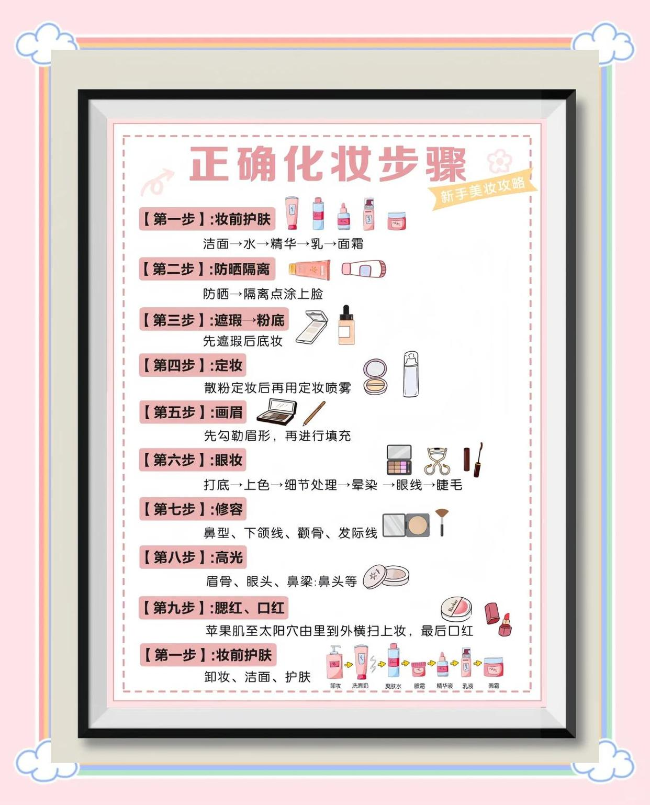

化妆步骤

新手必看！10步轻松搞定日常妆容
✅【第一步】妆前护肤：洁面→水→精华→乳→面霜
这一步可是基础中的基础，护肤做不好，妆容再好看也没用。所以，一定要先把脸洗干净，然后依次涂上化妆水、精华、乳液和面霜。
✅【第二步】防晒隔离：防晒→隔离点涂上脸
防晒和隔离可是化妆的第一步，千万别偷懒。先涂防晒霜，等它稍微干一点后再点涂隔离霜，这样可以防止紫外线伤害和底妆脱妆。
✅【第三步】遮瑕→粉底：先遮瑕后底妆
遮瑕和粉底是底妆的关键。先用遮瑕膏遮盖黑眼圈、痘痘等瑕疵，然后再上粉底液。这样既能遮盖小瑕疵，又能让底妆更自然。
✅【第四步】定妆：散粉定妆后再用定妆喷雾
定妆可是让妆容更持久的关键。先用散粉定妆，然后再喷一层定妆喷雾，这样你的妆容就能保持一整天了。
✅【第五步】画眉：先勾勒眉形，再进行填充
眉毛是妆容的灵魂，画好眉毛能让整个妆容更有立体感。先用眉笔勾勒出眉形，然后再用眉粉或眉膏填充。
✅【第六步】眼妆：打底→上色→细节处理→晕染→眼线→睫毛
眼妆是化妆的重点，也是最容易出错的地方。先用眼影打底，然后选择合适的眼影颜色进行上色，接着处理细节，晕染自然，最后画上眼线和涂睫毛膏。
✅【第七步】修容：鼻型、下颌线、颧骨、发际线
修容能让脸部更有立体感。用修容粉或修容刷在鼻型、下颌线、颧骨和发际线处轻轻扫几下，效果立竿见影。
✅【第八步】高光：眉骨、眼头、鼻梁、鼻头等
高光能让脸部更立体。用高光粉或高光棒在眉骨、眼头、鼻梁和鼻头处轻轻点涂或扫几下，效果超赞。
✅【第九步】腮红口红：苹果肌至太阳穴由里到外横扫上妆，最后口红
腮红和口红是提升气色的关键。先用腮红刷在苹果肌至太阳穴处由里到外横扫上腮红，最后涂上口红。记得选择适合自己的颜色哦！
✅【第十步】夜间护肤：卸妆、洁面、护肤
最后一步当然是要卸妆啦！用卸妆油或卸妆水彻底清洁脸部，然后进行日常的夜间护肤步骤。这样才能让皮肤保持健康哦！